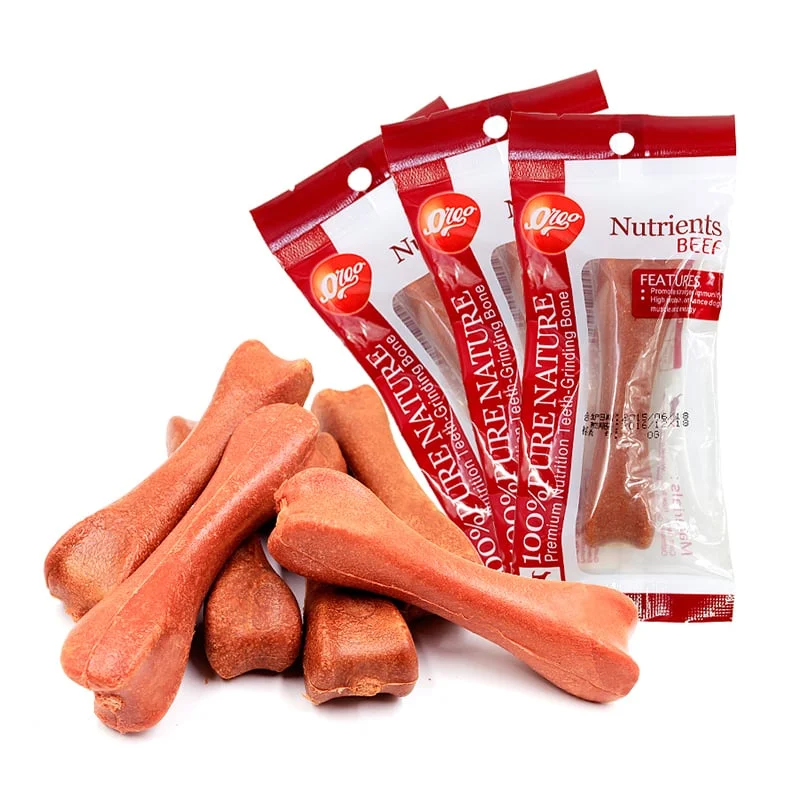

XƯƠNG CHO CHÓ VỊ THỊT BÒ
Thương hiệu: VEGEBRAND Orgo | Tình trạng: Còn hàng
25.000đ
Thông tin cơ bản:
Xương cho chó vị thịt bò VEGEBRAND Orgo Nutrients Beef dành cho các giống chó có kích thước trung bình có chứa vị thịt bò.
Số lượng sản phẩm:
MÔ TẢ CHI TIẾT
Lợi ích chính:
- Hiệu quả dinh dưỡng cao tăng cường thể chất, bổ sung canxi.
- Răng nướu chắc khỏe, giảm hình thành mảng bám cao răng và làm sạch răng.
- Sản phẩm xương gặm có thể sử dụng cho ăn trực tiếp hoặc cũng có thể làm đồ ăn thưởng cho chú chó của bạn.
- Xương cho chó vị thịt bò VEGEBRAND Orgo Nutrients Beef sử dụng thịt bò tươi ngon, có lượng protein cao, có hiệu quả thúc đẩy cơ thịt, bổ sung năng lượng.
- Sản phẩm vị thịt bò, có chứa đầy đủ vitamin B6, có thể tăng cường khả năng miễn dịch.
- Thúc đẩy việc hợp thành và chuyển hóa Protein, từ đó hỗ trợ phục hồi thể trạng yếu hoặc sau khi bị bệnh.
- Thiết kế hình xương có thể đáp ứng tập tính nhai của những chú chó, mát-xa răng hiệu quả, nướu chắc khỏe, nâng cao khả năng nhai của chó.
Hạn sử dụng:
18 tháng kể từ ngày sản xuất.ĐÁNH GIÁ SẢN PHẨM